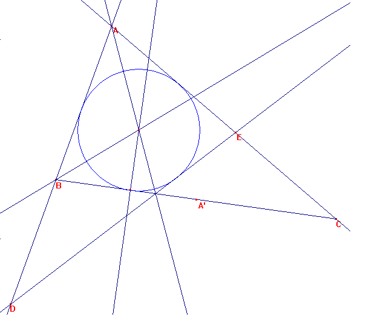
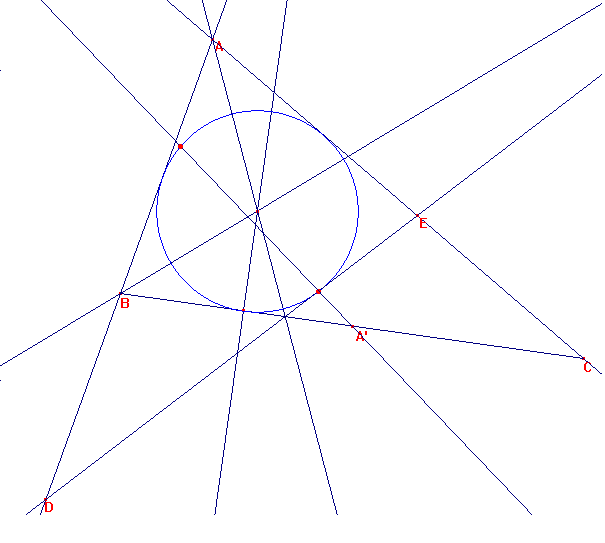
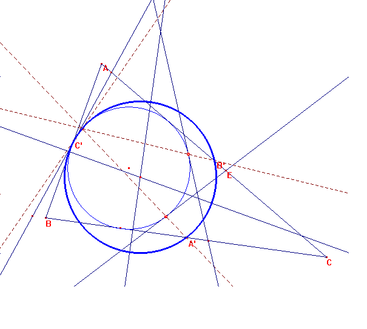

Resumen breve del editor a partir de los documentos de Yvonne y René Sortais.
Dado un triángulo no isósceles, construimos la circunferencia inscrita.
Tracemos los simétricos de los vértices según las bisectrices. Darán lugar a un segmento tangente a la inscrita.

Consideremos esos puntos de tangencia, y el centro del lado, tracemos la recta que pasa por él.
Tal recta cortará a la circnuferencia inscrita en un punto de Feuerbach, que es también de la circunferencia de los nueve puntos, llamada de Euler.

De igual manera se procede con las exinxcritas.

Imagen de un punto de Feuerbach con las tres construcciones desde A' B' C' y la circunferencia de los nueve puntos.